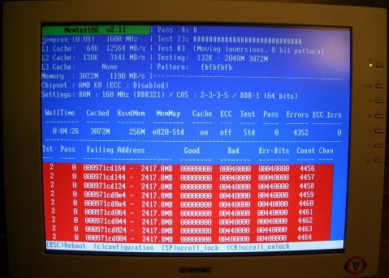

<html><body>
<head>
            <title>ZFS likes to have ECC RAM | Oracle Czech techie's adventures Blog</title>
<meta name="publish_date" content="2009-12-10 13:37:45">
</head>
                                                                    <p>I have been using custom built {ZFS,OpenSolaris}-based NAS at home for more than a year. The machine<br/>was built partly from second hand components (e.g. motherboard), from in-house unused iron<br/>and from minority of brand new stuff (more on that in a separate entry). The machine has been running<br/>constantly and serving data occasionally with very light load. One day I needed to perform<br/>some administrative task and realized it's not possible to SSH into the machine. Console login<br/>revealed the uptime is just couple of days, both pools (root pool and data pool) contain staggering <br/>number of checksum errors. In the <tt>/var/crash/</tt> directory there was couple of crash dumps. Some of them<br/>were corrupted and mdb(1) refused to load them in or reported garbage. The times of the crashes corresponded <br/>to the Sunday night scrubbing for each of the pool. At least two of the dumps contained interesting and fairly<br/>obvious stack trace. I no longer have the file so here's just the entry from the log:</p><pre>Nov  1 02:27:20 chiba &#92;^Mpanic[cpu0]/thread=ffffff0190914040: <br/>Nov  1 02:27:20 chiba genunix: [ID 683410 kern.notice] BAD TRAP: type=d (#gp General protection) rp=ffffff0006822380 addr=488b<br/>Nov  1 02:27:20 chiba unix: [ID 100000 kern.notice] <br/>Nov  1 02:27:20 chiba unix: [ID 839527 kern.notice] sh: <br/>Nov  1 02:27:20 chiba unix: [ID 753105 kern.notice] #gp General protection<br/>Nov  1 02:27:20 chiba unix: [ID 358286 kern.notice] addr=0x488b<br/>Nov  1 02:27:20 chiba unix: [ID 243837 kern.notice] pid=740, pc=0xfffffffffba0373a, sp=0xffffff0006822470, eflags=0x10206<br/>Nov  1 02:27:20 chiba unix: [ID 211416 kern.notice] cr0: 8005003b<pg,wp,ne,et,ts,mp,pe> cr4: 6f8<xmme,fxsr,pge,mce,pae,pse,de><br/>Nov  1 02:27:20 chiba unix: [ID 624947 kern.notice] cr2: fee86fa8<br/>Nov  1 02:27:20 chiba unix: [ID 625075 kern.notice] cr3: b96a0000<br/>Nov  1 02:27:20 chiba unix: [ID 625715 kern.notice] cr8: c<br/>Nov  1 02:27:20 chiba unix: [ID 100000 kern.notice] <br/>Nov  1 02:27:20 chiba unix: [ID 592667 kern.notice]     rdi: ffffff018b1e1c98 rsi: ffffff01a032dfb8 rdx: ffffff0190914040<br/>Nov  1 02:27:20 chiba unix: [ID 592667 kern.notice]     rcx: ffffff018ef054b0  r8:                c  r9:                b<br/>Nov  1 02:27:20 chiba unix: [ID 592667 kern.notice]     rax: ffffff01a032dfb8 rbx:                0 rbp: ffffff00068224a0<br/>Nov  1 02:27:20 chiba unix: [ID 592667 kern.notice]     r10:                0 r11:                0 r12: ffbbff01a032d740<br/>Nov  1 02:27:20 chiba unix: [ID 592667 kern.notice]     r13: ffffff01a032dfb8 r14: ffffff018b1e1c98 r15:             488b<br/>Nov  1 02:27:20 chiba unix: [ID 592667 kern.notice]     fsb:                0 gsb: fffffffffbc30400  ds:               4b<br/>Nov  1 02:27:20 chiba unix: [ID 592667 kern.notice]      es:               4b  fs:                0  gs:              1c3<br/>Nov  1 02:27:20 chiba unix: [ID 592667 kern.notice]     trp:                d err:                0 rip: fffffffffba0373a<br/>Nov  1 02:27:20 chiba unix: [ID 592667 kern.notice]      cs:               30 rfl:            10206 rsp: ffffff0006822470<br/>Nov  1 02:27:20 chiba unix: [ID 266532 kern.notice]      ss:               38<br/>Nov  1 02:27:20 chiba unix: [ID 100000 kern.notice] <br/>Nov  1 02:27:20 chiba genunix: [ID 655072 kern.notice] ffffff0006822260 unix:die+10f ()<br/>Nov  1 02:27:20 chiba genunix: [ID 655072 kern.notice] ffffff0006822370 unix:trap+43e ()<br/>Nov  1 02:27:20 chiba genunix: [ID 655072 kern.notice] ffffff0006822380 unix:_cmntrap+e6 ()<br/>Nov  1 02:27:20 chiba genunix: [ID 655072 kern.notice] ffffff00068224a0 genunix:kmem_slab_alloc_impl+3a ()<br/>Nov  1 02:27:20 chiba genunix: [ID 655072 kern.notice] ffffff00068224f0 genunix:kmem_slab_alloc+a1 ()<br/>Nov  1 02:27:20 chiba genunix: [ID 655072 kern.notice] ffffff0006822550 genunix:kmem_cache_alloc+130 ()<br/>Nov  1 02:27:20 chiba genunix: [ID 655072 kern.notice] ffffff00068225c0 zfs:dbuf_create+4e ()<br/>Nov  1 02:27:20 chiba genunix: [ID 655072 kern.notice] ffffff00068225e0 zfs:dbuf_create_bonus+2a ()<br/>Nov  1 02:27:20 chiba genunix: [ID 655072 kern.notice] ffffff0006822630 zfs:dmu_bonus_hold+7e ()<br/>Nov  1 02:27:20 chiba genunix: [ID 655072 kern.notice] ffffff00068226c0 zfs:zfs_zget+5a ()<br/>Nov  1 02:27:20 chiba genunix: [ID 655072 kern.notice] ffffff0006822780 zfs:zfs_dirent_lock+3fc ()<br/>Nov  1 02:27:20 chiba genunix: [ID 655072 kern.notice] ffffff0006822820 zfs:zfs_dirlook+d9 ()<br/>Nov  1 02:27:20 chiba genunix: [ID 655072 kern.notice] ffffff00068228a0 zfs:zfs_lookup+25f ()<br/>Nov  1 02:27:20 chiba genunix: [ID 655072 kern.notice] ffffff0006822940 genunix:fop_lookup+ed ()<br/>Nov  1 02:27:20 chiba genunix: [ID 655072 kern.notice] ffffff0006822b80 genunix:lookuppnvp+3a3 ()<br/>Nov  1 02:27:20 chiba genunix: [ID 655072 kern.notice] ffffff0006822c20 genunix:lookuppnatcred+11b ()<br/>Nov  1 02:27:20 chiba genunix: [ID 655072 kern.notice] ffffff0006822c90 genunix:lookuppn+5c ()<br/>Nov  1 02:27:20 chiba genunix: [ID 655072 kern.notice] ffffff0006822e90 genunix:exec_common+1ac ()<br/>Nov  1 02:27:20 chiba genunix: [ID 655072 kern.notice] ffffff0006822ec0 genunix:exece+1f ()<br/>Nov  1 02:27:20 chiba genunix: [ID 655072 kern.notice] ffffff0006822f10 unix:brand_sys_syscall32+19d ()<br/>Nov  1 02:27:20 chiba unix: [ID 100000 kern.notice] <br/>Nov  1 02:27:20 chiba genunix: [ID 672855 kern.notice] syncing file systems...</pre></p><br/>Also, next to the messages on the console I found some entries in <tt>/var/adm/messages</tt> like this one:</p><pre>Nov  2 12:15:01 chiba genunix: [ID 647144 kern.notice] ksh93: Cannot read /lib/amd64/ld.so.1</pre><p>Later on, the condition of the machine worsened and it was not even possible to execute some commands <br/>due to I/O errors up to the point when the machine had to be halted.</p><p>The panic occurring in kmem routines, loads of checksum errors on both mirrored pools (same number of errors for <br/>each disk in the mirror) and the fact that the system was running with the same build for couple of<br/>months without a problem lead me to try memtest:</p><p><center><br/><a href="http://blogs.sun.com/vlad/resource/memtest-failures.jpg"><br/></a><br/></center></p><p>The errors started appearing on the screen in the first couple of seconds of the run. It turned out one of<br/>the 3 1GB DDR2 chips went bad. In case you're wondering, the DIMMS were bought as new 1 year ago, were branded<br/>(all of them from the same brand known for gaming/overclocking equipment, same type) and had aluminium heat sink<br/>on it, so no low quality stuff.</p><p>I was able to recover the data from past snapshots and replaced the RAM with ECC DIMMS (which required new <br/>motherboard+CPU combo). This is nice case of semi-silent data corruption detection. Without checksums the machine<br/>would be happily panicking and corrupting data without giving clear indication what is going on (e.g. which files<br/>were corrupted). So, even for home NAS solution ECC RAM is good (if not essential) to have. </p><p>FMA should do the right thing if one of the ECC modules goes bad which means it will not allow the bad pages to be used<br/>(the pages will be retired). The list of retired pages is persistent across reboots. More on FMA and ECC RAM<br/>can be found e.g. in <a href="http://opensolaris.org/jive/thread.jspa?messageID=417291">this discussion</a><br/>on fm-discuss or in the <a href="http://blogs.sun.com/robj/entry/fma_and_dimm_serial_numbers">FMA and DIMM <br/>serial numbers</a> blog entry in Rob Johnston's blog or in the Eversholt rules for AMD in<br/><a href="http://src.opensolaris.org/source/xref/onnv/onnv-gate/usr/src/cmd/fm/eversholt/files/i386/i86pc/amd64.esc">usr/src/cmd/fm/eversholt/files/i386/i86pc/amd64.esc</a>.</p>
</body></html>
